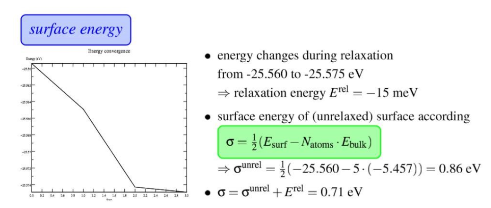
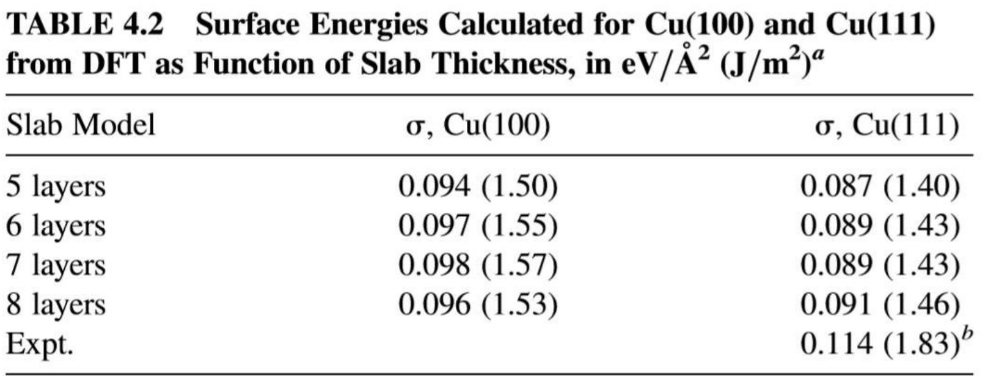

表面能的计算
表面能是创造物质表面时,破坏分子间化学键所需消耗的能量。

$E^{rel}$ : Relaxation energy,即弛豫能量。这个前面一节我们已经讲过了,从刚刚切好的表面优化到稳定的表面所释放的热量。图中的第一个点就是刚刚切好表面的能量,最后一个点就是优化完成之后的能量。这个相信大家现在都能理解了。
$\sigma$: 在handonsession-III里面,这个用来表示表面能。
$E^{surf}$: 优化完毕后的slab能量
$N_{atoms}$:Slab中的原子数目
$E_{bulk}$: Bulk结构中单个原子的能量。 (不是指的体相的能量,而是体相中单个原子能量 )
$\sigma^{unrel}$ : 将块体直接切开所用的功,因为是切成了2份,公式中除以2 (在这个计算里面,暂且不考虑表面的弛豫,单纯从体相切成2个表面的过程 ,实际对应的是表面弛豫的第一步能量)
从体相到切开表面直至达到稳定状态,总的能量变化为 ：$\sigma=\sigma^{unrel}+E^{rel}$
$E^{rel}$这里没有除以2。 为什么呢? 这是因为我们只放开了上面的两层原子。也就是只优化了一个表面。 (如果我们两个表面都要优化的时候,是不是E 也除以2了呢? 答:是的 )
面积就是你计算的slab的那一层表面积
$1 eV/Å = 16.02 J/m^2$
表面能计算的参数影响 ：（Slab的能量和Bulk的能量 ）
Slab 能量:
Slab的层数:

slab表面的大小,一般来说p(1x1)的即可。当然啦,你可也比较下p(1x1)和p(2x2)的区别: 这里要注意的是: 改变表面的大小,KPOINTS也要发生相应的变化,只有这样,两个计算的结果才具有可比性。
真空层的厚度
Bulk 的能量
- 单胞或者原胞的计算均可,当然你也可以扩一下晶胞
- Theoretical Surface Science: A Microscopic Perspective
计算案例有很多，找到某篇文献重复即可。